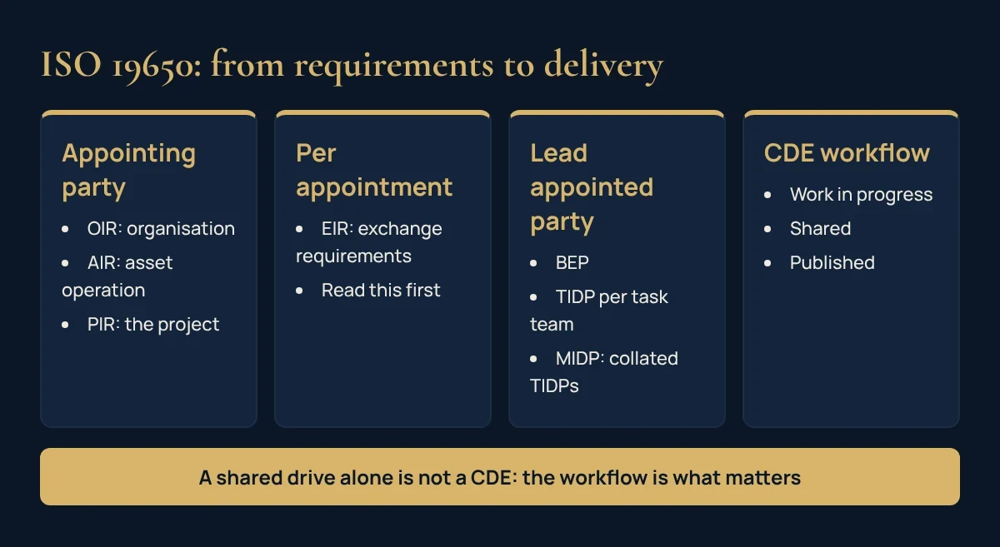

Equipment data is only useful if the right person asks for it, at the right time, in a form others can find. ISO 19650 is the framework that organises exactly that. You do not need to master the standard to work well inside it, but you do need to know its vocabulary.
This article follows the UK guidance published to support BS EN ISO 19650 (Part 1: Concepts, 2019, and Part 2: Processes for Project Delivery, third edition, 2020). It is an orientation, not a substitute for the standard or the project documents. Check which parts and editions your project actually cites.
Who is who
The guidance defines the appointing party as the organisation leading the project or asset management. The lead appointed party is responsible for coordinating information exchange between task teams, or between a delivery team and the appointing party. In practice, an equipment planner usually sits in a task team, and information flows through the lead appointed party.
Four requirements, four questions
Part 1 defines four sets of information requirements:
- OIR, organisational information requirements.
- AIR, asset information requirements.
- PIR, project information requirements.
- EIR, exchange information requirements.

The guidance describes the PIR as being set by the appointing party, and the EIR as the requirements for a specific appointment. For equipment planners the EIR is the document to read first, because it states what information must be delivered, when, and in what form. The AIR matters at handover, since it concerns the information the owner needs to operate and maintain the asset.
Plans that answer the requirements
Three plans turn requirements into work:
- BIM execution plan (BEP). The guidance describes a pre-appointment BEP as part of the tender response, and a BEP confirmed after appointment. The lead appointed party prepares it.
- Task information delivery plan (TIDP). Each task team lists what it will deliver.
- Master information delivery plan (MIDP). The lead appointed party compiles it by collating the task information delivery plans.
If your equipment deliverables, such as room equipment lists or model data for a given stage, are not in your team's TIDP, they are probably not in anyone's schedule.
The common data environment
The guidance is blunt on one point: using a shared drive as a Common Data Environment solution will not meet ISO 19650. It treats the CDE as a workflow supported by a solution, and the workflow is the important part. It also notes the appointing party may appoint a third party to host, manage or support the CDE.
Part 2 covers revision control in work in progress, then shared and published information, with status codes controlling movement. For planners the habit is simple: work in your own area, share only checked information, and never edit a published container directly.
Level of information need
Part 2 refers to checking contents against the level of information need. The idea is to deliver the information required for the purpose of the exchange, no more and no less. For equipment, that means agreeing early which attributes each stage needs, rather than filling every field in every model.
Takeaway
Read the EIR, find your line in the TIDP, work inside the CDE workflow, and deliver the level of information the exchange needs. Equipment data then arrives where, when and how the project asked for it.